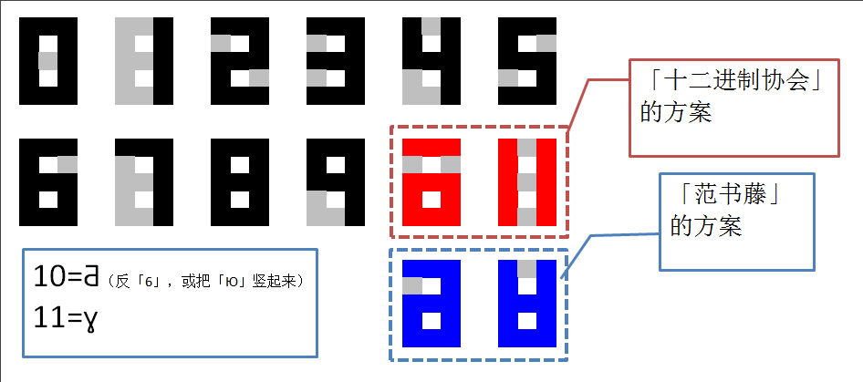
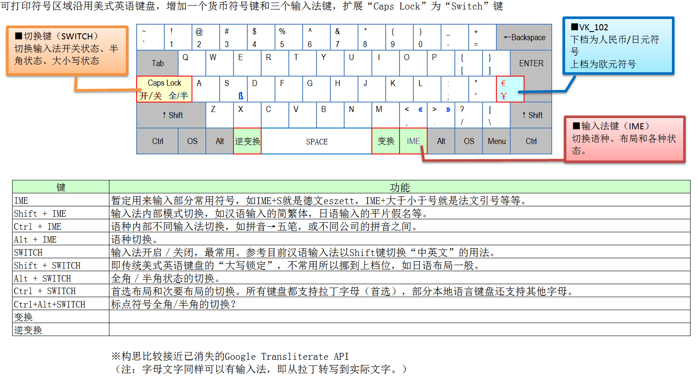

时间还早，再开一篇。这一篇接着前面的话题，准备为「希帕索斯会 」最初的研究提供一些数学基础。具体说，是从「十二」这个数字开始。
因为毕达哥拉斯学派 的教义「万物皆数」，不仅仅把数学和音乐联系到一起，而是与世界上所有概念联系到一起，其中当然就包括了对于早期文明来说重要性要比现在高得多的「历法」，以及相关的天文。所以，音乐「十二律」与历法「十二个月」之间的关系，同样是需要在意识形态上面阐述的，任何毕达哥拉斯学派 以及受到它们影响的学者，都必须回答这些问题。
并且，哪怕是传统意识形态，对于「历法」的重视也是关乎政权合法性的问题。我中华兲朝上国情况略，只看「中学历史课本」上面「热月」「雾月」字眼也知道，法国大革命之后的「共和历」就是新打鼓另开张以显示「新朝气象」或「普世价值」。当时法国理想主义者甚多，包括但不限于「公制」在内的正面意义也是有的，这里特意提醒不要以偏概全。
这「每年十二个月、每月三旬、每旬十天、每天十小时、每小时一百分钟、每分钟一百秒、年末五或六天闰日、以体现法国物候特点的自然现象命名」的历法，倒是「意识形态中立」，只不过太不方便了。这里说的「不方便」，除了与传统习惯差距甚大之外，就是「365+13=378」个名字记不住。
只看年月日的划分，法国共和历与传说中的古埃及历法相同，但是时分秒的划分就「规范」但「奇葩」了。传统我们都知道：每天日夜各十二小时，每小时六十分钟，每分钟六十秒，而秒以下因为精度原因没有传统，倒是可以用十进制。
而这种采用十二进制和六十进制的原因，肯定与天文现象有关。月相变化是可以直观感受的，年度更迭也是可以直观感受的，于是粗糙的十二进制就这么出现了。然而，人类因为十个手指头的缘故，日常采用十进制，所以「集大成者」的六十进制就这么出现了。
唯物主义证据也有，据说从苏美尔 一直流传到巴比伦 的六十进制当中，计数规则是十进制的，泥板上的楔形文字 里面「Y」表示一而「<」表示十。而在我中华兲朝上国，就体现为「天干地支」，据考古学家说先出现十二进制「地支」然后才出现十进制「天干」最终综合为「六十甲子」。
其它历法相关内容略，包括但不限于完全脱离现实的「每年十三个月每月二十天的阿兹特克 神圣历」在内的世界各文明各民族独特计时方式及其内涵等，各位自行搜索可也。这里再提到一个事实，绿教用的历法是纯阴历，只关注月亮周期而不关注太阳周期，与其它古文明历法比较起来，更是能体现出意识形态的差距，估计与早期群神论 宗教各山头势力有关。
而日常使用十二进制的文化也有，猜测可能与人类除了拇指之外其他四根指头各有三节指骨有关。汉语读者可以回顾「掐指一算」字眼，可能还在现实中见过算命先生单手用拇指点击指骨进行地支 计数实践的场景。而日常使用十进制但度量衡单位中出现过十二进制的也有，从古罗马 到不列颠 都有唯物主义证据，这里略过。
总之，设定「希帕索斯会 」为了开展「十二平均律」研究，采用十二进制计数方式发展了一套「非主流」数学表达方式，包括但不限于「初等数论」。细节更容易解释，从楔形文字 、古埃及文字 到罗马数字 ，都不是「位值制」计数，而是简单堆积符号。因此早期「希帕索斯会 」成员面临的技术障碍，并不比古巴比伦 数学工作者麻烦多少。
而如今通用的位值制计数符号「阿拉伯数字」，各位也都很熟悉了不需要展开。于是设定混进绿人当中的「希帕索斯会 」成员与时俱进的采用了阿拉伯数字，并作出相应扩展。至于为什么能混进绿人当中，更简单，因为绿人严格执行「不可塑像」的律法，所以典型绿装饰除了蛆体字书法之外，就是几何图案的组合。所以嘛，擅长数学尤其是几何的「希帕索斯会 」在绿教上升期很轻松就能获得一定地位以及部分资源开展研究。
而「面向十二进制扩展的阿拉伯数字」，在本位面就有多种方案，「十二进制协会」也很活跃，相关内容请各位自行搜索。这里只提到与设定关系密切的部分，与前面提到的后面会出现的「构装体计算器」有关。
F·爱默生·安德鲁斯 （F. Emerson Adnrews）在其1935年出版的著作《新的数字：接受十二进制使数学更简单 》（New Numbers: How Acceptance of Duodecimal Base Would Simplify Mathematics ）使用手写体的X和E，来分别代表10和11。
大不列颠十二进制协会 （Donzel Society of Great Britain ）所采用的是美国速记发明人艾萨克·皮特曼 创造的标记法，使用翻转的2和3来表示10和11。
美国十二进制协会 则用星号*和井号#分别代表10和11，原因在于*类似加上删除线的X、#类似加上双删除线的11，而且两者正好都能在电话拨号盘上找到。
还有些系统用ɸ表示10（1与0的合体）以及交叉的十字+、x、或者†表示11。而所有这些符号的缺点是无法在计算器上通过七段LED数码管来显示 。
而我的方案，也是「范书藤 」接触到的「希帕索斯会 」的「标准」，贴图如下：

计算器十二进制表达
为什么这么设计，还是因为需要在「网络」上面以「电子版」形式表达出来，所以只能从「操作系统和浏览器支持的符号」当中挑比较接近的，通过变更「字体」而使得大致与数字显示风格一致并且不至于同其它日常使用的字母和数字混淆。
这还没完，提到过「卡壳世界 」当中「希帕索斯会 」使用「三进制」。于是对应本位面二进制字符集的，不是128或256个字符，而是「81×3=243」个。虽然大致与本位面相同，但是需要重新设计「代码页」，可以利用Unicode自定义区域，把架空的符号尽量凑到一起以实现一些早期计算机简单增减变更字符的「算法」。
而为了能在本位面计算机上面码字，只能以本位面字符编码为基础作出适当扩展。具体说，准备以「美国和西欧」的「Windows-1252」代码页为基础，把「扩展ASCII字符」部分替换掉部分符号。虽然没有「IT大鳄」支持不能直接用，但总是可以在包括但不限于Linux的开源操作系统上面自力更生艰苦奋斗自己动手丰衣足食嘛。
然后就面临了另外一个问题，在「Windows-1252」代码页当中，出现了「¼」「½」「¾」这三个符号，想必是「西欧」经常用到的。那么在十二进制之下，还应该补全「1/3 」「2/3 」「1/6 」「5/6 」四个符号，才算完整体现了「希帕索斯会 」的「非主流」表达方式嘛。
可是在微软和Unicode的定义当中，「Windows-1252」的扩展部分只剩下「81、8D、8F、90、9D」五个位置，放下两个数字之后，就不够用了。于是决定可以换掉「Œ」「œ」「Æ」「æ」四个合体字母，一律分开写，不至于发生误会。再然后，「©」「®」这俩版权和注册商标符号似乎也可以换掉。将来没准还需要根据构思的进展，塞进去其它「希帕索斯会」符号呢。
再然后就是设计键盘，把这些符号都摆到目前计算机键盘上面去。可能各位用惯了美式键盘的汉语读者不知道欧洲情况，简单说就是除了多了几个键之外，「右Alt」还是「AltGr」，可以直接与字符键组合输入上面标注的其它字符，正如「按Shift输入上档字符」那样。
不过因为字符集设计还没完成，所以键盘设计尚未开始。
这里贴一张约十年前构思的「汉语键盘设计图」，当时的设想有些如今看来已经没有必要，不过还是为了保留岁月痕迹，以纪念如今已经消逝的那些曾经认为很重要的情绪：

汉语键盘设计图
本篇感觉差不多了，十二进制相关话题等到后面涉及到了再继续展开。